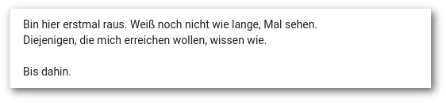

Nikola-Import-Plugin für Google+
Inhalt
Das Ende ist nah
Häufig wurde das Ende von Google+ herbeigeunkt. Nun, da es tatsächlich in etwa einem Jahr so weit ist, weicht Geschäftigkeit dem ersten Schock.
In weiser Vorraussicht beschäftigte ich mich bereits vor einer Weile damit, die Daten brauchbar zu konservieren und entschied mich für eine Lösung mit dem statischen Webseitengenerator Nikola: Verloren im Kaninchenbau von Google Takeout.

Resultat der Nikola-generierten Seite mit hyde-Thema
Vorbereitungen
Google Takeout
Zunächst benötigt man die Daten aus dem Takeout. Da sich hier große Datenmengen ansammeln, ist es ratsam, keine weiteren außer Googe+-relevanten Produkte auszuwählen:
- Button "Nichts auswählen", dann "Stream in Google+" aktivieren
- Als Dateiformat HTML wählen
- Als Archivformat zip wählen, bei tar.gz kann es Encodingprobleme geben
- Nach Fertigstellung kann das/die Archiv/e heruntergeladen und entpackt werden
- die index.html gibt Hinweise auf Fehler bei der Archiverstellung
Nikola
- Installation:
- Nikola kann über pip oder je nach verwendeter Distribution über die Paketverwaltung installiert werden: Getting Started.
- Initialisierung:
- Das Plugin kann in einer bestehenden mit Nikola verwalteten Webseite erstellt werden. Es ist aber auch möglich, für diesen Verwendungszweck eine neue leere Seite zu erstellen, die dann später wieder gelöscht wird:
$ nikola init gplus_dummy_site
- Plugin installieren:
- Das Plugin aus dem als Archiv herunterladen und enpacken oder das Repository klonen: encarsia/gplus_nikola_import. Den Ordner in die im vorigen Schritt angelegten Seite in den anzulegenden plugins-Ordner kopieren.
- Optional: Um die Übersicht zu behalten, kann man auch den Takeout-Ordner in die Nikola-Seite verschieben.
Import ausführen
Dateistruktur
Bevor der Import ausgeführt wird, sollte man einen Blick in die import_gplus_html.py werfen. Die Ordnerbezeichnungen entsprechen der deutschen Spracheinstellung des Takeouts, bei abweichender Spracheinstellung muss man hier die entsprechenden Bezeichnungen der Dateistruktur anpassen.
Es werden Beiträge nach Verteilungsstatus unterschieden:
- Öffentlich geteilt
- Mit Meinen Kreisen geteilt
- Mit Erweiterten Kreisen geteilt
- Mit bestimmten Kreisen oder Personen/Profilen geteilt
- Beiträge in Communites
- Beiträge in Sammlungen
Beiträge filtern
Mit der Option import_private lässt sich einstellen, ob mit bestimmten Kreisen oder Personen/Profilen geteilte Beiträge importiert werden sollen.
Die Option import_com schaltet den Import von Communitybeträgen ein oder aus. Dabei wird nicht nach öffentlichen oder geschlossenen Communities unterschieden.
Import
Im gplus_dummy_site-Verzeichnis führt man nun den Import aus, dabei wird als Argument der Ordner des entpackten Takeout-Verzeichnisses übergeben:
$ nikola import_gplus_html takeout
Nikola initialisiert eine neue Seite namens "new_site", dort werden alle Posts, die dazugehörigen Metadaten und die Mediendateien gespeichert.
Statische Seite erstellen
conf.py
Nun wechselt man in das neue Verzeichnis "new_site", das wiederum eine Nikola-Instanz ist.
Dort befindet sich die Konfigurationsdatei conf.py. In dieser lassen sich nun Anpassungen vornehmen. Da im Beispiel das Thema hyde verwendet wird, wird dieses hier gleich angepasst, außerdem RSS deaktiviert:
THEME = "hyde" GENERATE_RSS = False
Thema
Hyde ist ein perönlicher Favorit und wird deshalb hier installiiert:
$ nikola theme -i hyde
Im Pluginordner befindet sich eine CSS-Datei custom.css, die einige optische Anpassungen für diesen Anwendungsfall enthält, diese einfach in das Verzeichnis themes/hyde/assets/css kopieren.
Grundsätzlich funktioniert die Seite mit jeden Theme. Eine Liste der verfügbaren Themes erhält man folgendermaßen:
$ nikola theme -l # installierbar $ nikola theme --list-installed # installiert
Um ein Thema zu verwenden, muss es in der conf.py angegeben und die Seite neu gebaut werden. Ein erneuter Datenimport ist natürlich nicht notwendig.
Build
Die eigentliche Generierung der Seite erfolgt zum Schluss mit
$ nikola build
Den lokalen Server startet man mit
$ nikola serve [2018-10-18T09:57:02Z] INFO: serve: Serving on http://127.0.0.1:8000/ ...
Screenshots

Beitragsansicht (Postception!)

Archiv

Der Verteilungsstatus ist als Kategorie erfasst

Kategorieansicht
Links
- Hier: Verloren im Kaninchenbau von Google Takeout
- Hier: The Notwork - lasst G+ sterben
- Import-Plugin für Nikola: gplus_nikola_import
- Alternative mit G+-Import: net2o - reinvent the internet, Bernd Paysan auf G+
The Notwork
Die Nachricht ereilte mich per Twitter: das Ende von Google+ ist besiegelt. Na und? - Das Netzwerk hat doch schon lange seinen Reiz verloren.
Richtiges Netzwerk, falsche Zeit
Als Google im Jahr 2011 sein eigenes soziales Netzwerk launchte, sollte es der Facebook-Killer werden, ohne wie Facebook auszusehen oder zu funktionieren. Dies wirkt zunächst einseitig fokussiert, muss man jedoch bedenken, dass Facebook das mit großem Abstand führende soziale Netzwerk zu dieser Zeit war.
Im deutschsprachigen Raum findet man unter den Top 20 der sozialen Netzwerke neben dem Primus noch die VZ-Netzwerke, Jappy, WerKenntWen und Stayfriends - Netzwerke, die inzwischen heute ein Nischendasein fristen, falls sie noch existieren.
Angesichts der Konkurrenz konnte die Prognose doch gar nicht so schlecht sein? - Wenn da der blaue Riese nicht gewesen wäre. Google erwischte den vielleicht schlechtesten Zeitpunkt zum Launch. Facebook hatte weitgehende Marktbeherrschung und -sättigung (beim Nutzer) errungen. Die Mehrheit war einfach nicht gewillt, aktiv ein weiteres Netzwerk zu nutzen, weil sie schlicht keinen Grund darin sah. Die anhaltende massive Kritik und der Verdruss kamen später.
Die Spielwiese
Wie viele andere habe auch ich schnell Gefallen an Google+ gefunden. Das Kreis-Konzept ermöglichte es, den aktiven wie passiven Gebrauch gruppenbezogen zu filtern. Es gab einen uneingeschränkten Gesamtstream und mit der Ripples-Funktion konnte man den Weg von Beiträgen verfolgen.
Alle drei Elemente hat Google im Laufe der Zeit abgeschafft oder dies zumindest versucht (Kreise wurden nach Protest doch beibehalten, sie waren aber in der mobilen App später standardmäßig nicht aktiviert, allerdings wurde die Kreise teilen-Funktion abgeschafft).
Ideen wie Bildbearbeitungs-Events, echte Gespräche in Kommentarspalten, der Austausch mit vielen unbekannten Leuten und glorreicher Quatsch aller Niveaustufen zeichneten Google+ aus.
| GIMPen, bis der Arzt kommt. Mein Beitrag zum Hack My Church - Photomanipulation Contest |
Falsch abgebogen
Es war lange Zeit die Rede davon, dass Google+ absolute Priorität im Unternehmen hat. Doch was war nach dem Launch neben der Einführung von Communities und den minimalen Markup-Möglichkeiten eigentlich die letzte positive Entwicklung an Google+? Na? Stimmt, Collections und das Umfragetool waren passende Ergänzungen. Aber sonst?
| Post von vor 5 Jahren: Google hat mal wieder an Plus herumgedoktort |
Die Mängelliste ist mit der Zeit stetig gewachsen und als Sahnehäubchen gab es noch den Zwangsaccountverknüpfungs-PR-GAU obendrauf. Mal überlegen, was mir so einfällt:
- umständliches Kreismanagement, das nie irgendeine Pflege erhielt
- Fotos:
- Einschränkung der Bearbeitungsfunktion
- Alben und Stories (letztere später nicht mehr), Kommentare sprengen einzelne Fotos als Beiträge ab
- das YouTube/Google+-Kommentarsystem und generell halbseidene Integration
- Versuch einer Reallnamendurchsetzung
- "+1"-Empfehlungen
- Abschaffung von Ripples
- Abschaffung der Geburtstagsnotiz
- Unvollständiger "Alles"-Stream
- Ausklappen der Kommentare in "Facebook-Verhalten", also Anzeige der letzten, nicht aller, Kommentare
- Buttons sind mal eckig, dann rund und was links ist, wandert nach rechts
- Speicherhunger der (Android-)App
- defizitäre Benachrichtigungsfunktion
- Abschaffung von Community-Managern oder irgendwelchen Ansprechpartnern
- die merkwürdige Beitragsauswahl des "Angesagten"/"What's hot"-Streams
- kaputte Streams, plötzlich auftauchende uralte Beiträge
- Spaces
- der Mord an Mr. Jingles
Jedes Mal, wenn ein Update für Google+ angekündigt wurde, ging die allgemeine Stimmung in den Keller, man verabschiedete sich im Voraus und selbst die überzeugtesten Atheisten beteten "bitte lass es nicht so schlimm sein".
Diagnose: Stockholm-Syndrom.
Klimawandel
Der Schuldige an der Misere ist gefunden. Google hat es versemmelt. Aber das ist nicht die ganze Wahrheit. Kommen wir zum Elefanten im Raum: der nachlassenden Qualität und thematischen Varianz der Inhalte gefolgt von der Abwanderung der Nutzer gefolgt von nachlassender Interaktion. Teufelskreis.
Was Google+ einmal auszeichnete, war die gute thematische Durchmischung. Es gab einige größere Nachrichtenportale, die eine Präsenz pflegten und in deren Beiträgen man sich austauschen konnte (einfach so, mit fremden Leuten), es gab die Fotografen mit Hashtagterror, Kitschbilder, Musik, Katzen, Fahrräder, Autos, Blümchen, viel schrägen Humor und noch mehr Technik.
Dann fielen zuerst die Nachrichtenseiten aus. Im Allgemeinen gingen diese dazu über, sofern sie es nicht schon von vornherein taten, Google+ als Linkablage mit geschlossenen Kommentaren zu nutzen (manchmal wurde man aufgerufen, etwas zu liken).
Andere, wie etwa der Deutschlandfunk, stellten ihre Aktivität ganz ein und konzentrierten sich auf andere Verbreitungskanäle wie etwa das für eine Hörfunkanstalt sehr viel näher liegende Instagram.
Inhaltlich kippte es von sachlichen, längeren Beiträgen hin zu leicht verdaulicher Screenshot-Kost vorwiegend zu Twitter, etwas Facebook, Klickstrecken, zu komplizierten Sachverhalten wurde allmählich nur noch ein Ja oder Nein geduldet, eine kurzlebige Empörungswelle folgte der nächsten und darüber wurde nie das regelmäßige Virtue Signalling vergessen.
Dafür benötige ich allerdings kein weiteres soziales Netzwerk, das einst durch sein etwas gehobenes Niveau auffiel, denn dann verwende ich nämlich das Original.
|  |
|---|
| Eine Abschiedsnachricht |
Bei mir besteht nicht primär die Frage, welche alternativen Plattformen für Google+-Nutzer jetzt in Frage kommen, sondern wohin die bereits abgewanderten ehemaligen Nutzer hin sind und ob diese überhaupt wieder aktivierbar wären.
Denn das Google+, das zum jetzigen Zeitpunkt übrig geblieben ist, möchte ich nicht mehr, auch nicht woanders.
Read on, my dear
Mimicry: make MATE taste like GNOME Shell
GNOME Shell is an elegant desktop environment. I like its appearance, modern looks and the basic concepts of using it. Although I consider myself as a loyal (and/because lazy) user it's not perfect. After testing something in a VM running MATE desktop I realized _how_ laggy it is on my machine. So I decided to trick myself by making MATE behave like GNOME. Does it work?
My GNOME Shell setup
The general desktop experience is given by the GNOME Shell itself but the everyday workflow is determinded by the use of extensions. In fact I state that nobody uses a plain GNOME Shell. So before tweaking the MATE desktop let's take a look at the customizations done to GNOME.
Extensions
Essential
- Activities Configurator - configure looks and behaviour of the hot corner and top panel (You want that!)
- Auto Move Windows - start application windows on predefined workspaces
- Battery status indicators:
- Dash to Dock - turn the dash into a full-grown dock (You want that, too!)
- Drop Down Terminal - unroll a terminal on keystroke
- Multi Monitors Add-On - extend top panel, add overview or workspaces on separate screens
- Screenshot Tool - make and save screenshots of the desktop or single windows
- TaskBar - show icons of running applications in the top panel
Honorable mentions
... of extensions that don't affect the general workflow
- Appfolders Management extension - edit appfolders from the application view
- Arch Linux Updates Indicator
- Backup Tools - backup appfolders, extensions and their settings
- Caffeine - disable screensaver and auto suspend
- Media Player Indicator - integrate media player controls into the system menu
- OpenWeather
- Window Is Ready - Notification Remover
Multi-monitor wallpaper
It's $CURRENT_YEAR and it's still an issue. While you can configure a multi-monitor setup in the preferences conveniently you still have to glue images together with ImageMagick to get different backgrounds on your screens like a caveman.
I highly recommend the application HydraPaper for this task.
Tweaking MATE
Back in the days everybody™ loved GNOME 2. Starting the MATE desktop feels instant familiar.
It's great that the desktop has been completely ported to the GTK+ 3 framework. If you install the MATE packages in addition to GNOME there are hardly dependencies needed for installation. Also regular GNOME applications should fit nicely into the desktop.
Recommended packages and tools:
- Dconf-editor (dconf-editor)
- MATE Tweak (mate-tweak)
Getting things to work the GNOME Shell way
Top Panel
Easy one - it's already there and you can have as much panels as you like whereever you want (that includes all screens). Use the regular applets:
- Weather information is integrated into the clock applet.
- Battery applet exists but seems to be a little buggy.
- The TaskBar extension provides the functionality of the good old window list applet, just use the original.
- The number of workspaces is fixed, use the workspace switcher.
No desktop icons
Who needs icons on the desktop if there are windows in the way anyway? You can disable desktop icons in MATE Tweak or by setting the org.gnome.desktop.background.show-desktop-icons property to "false".
Only show close button in windows
You can get rid of the minimize/maximize buttons by editing the org.mate.Marco.general.button-layout to 'menu:close'.
This solution does not affect applications using a Headerbar.
Dock
There are plenty of options to add application docks on linux desktops. There is also a specific applet for the MATE panel which can be installed by the mate-dock-applet.
My personal recommendation for now is Plank.
Keyboard application launcher
Using a keyboard launcher is one option to emulate the search bar.
With its unobtrusive look and plenty of search options Albert might be the choice of a dedicated GNOME Shell user.
Setting the shortcut to the [Super] key cannot be obtained in Albert's preferences. You will have to create a custom keybinding in dconf-editor:
- Go to org.mate.Marco.global-keybindings and set a "run-command-xx" from 'diabled' to 'Super_L'. The "xx" is the number of the command.
- Go to org.mate.Marco.keybinding-commands and set the corresponding "command-xx" to the value 'albert show'.
This will overwrite any other keybinding to the specific shortcut like Brisk menu.
Drop down terminal
I used Tilda on the GNOME 2 desktop so why not return to a long-serving application?
Even though the application is set to launch at session start in the preferences I had to add it to the startup applications manually.

Unrolled Tilda terminal on MATE, Plank dock
Multi-monitor setup
The wallpaper issue is the same as in GNOME Shell. You may want to use HydraPaper.
You can drag a panel on an extended screen only if it is not set to "extended" (uncheck in properties).
Marco issues (probably)
- Dragging a window to another screen might not always set this window in the foreground.
- Dragging maximized windows (e.g. webbrowser) to other screen may overlay panels.
- Plugging off and on extended monitors or logging into another session (like GNOME) may disarrange monitor settings and you have to drag the screens back into their positions in the preferences.
Screenshots
If you press [Print] you might be informed that "mate-screenshot" could not be found.
You can either install the mate-utils package which "mate-screenshot" is a part of or use the "gnome-screenshot" tool by editing the dconf entries org.mate.Marco.keybinding-commands.command-screenshot and org.mate.Marco.keybinding-commands.command-window-screenshot to the value gnome-screenshot.

Empty GNOME Shell

Beware of fraud! This is MATE.
What does not work
Hot corner
The Hot Corner probably is the most symptomatic feature of the GNOME 3 desktop. By moving the mouse to the top left corner or clicking on "Activities" or by pressing the [Super] key you activate the Activities Overview which shows open windows, the dash, workspaces and the application search/launch bar.
This functionality cannot be fully emulated on the MATE desktop.
Using the Brisk menu or a keyboard launcher (or both) to get the search bar function seems like a valid compromise. This is probably the common use case when pressing the [Super] key.
What's still missing is a good way of showing running application windows. I have the habit of kicking the mouse into the corner to get to the windows overview (I realize when doing that occasionally on other desktop systems) and the old [Alt]``+``[Tab] is not a replacement.

Activities Overview showing open windows
Dynamic workspaces
There is currently no way to get dynamic workspaces with the Marco window manager.
Does it work?
The MATE desktop is a great project. I'm glad that they managed to preserve the GNOME 2 spirit and upgrade it to a modern framework.
It is possible to integrate functionalities known from GNOME Shell into MATE turning it into a fast hybrid GTK+ desktop.
My MATE setup is a GNOME Shell copy. A good one but still. I have not decided yet if I want to live without the hot corner and I'd love to see Marco support headerbars and improved multi-monitor setups.
NoN: News, changes and release
Watch Knights of Ni grow up.
Versions'n'distros
Nikola v8
If you have not done yet you should read the upgrade guide to Nikola v8. NoN works with v7 and v8 nonetheless.
Runs on Archlinux and Ubuntu
I fiddled around until I got NoN working on a fresh Ubuntu 18.04 LTS installation. First install some dependencies:
$ sudo apt-get install gir1.2-webkit2-4.0 python3-pip
and then in lack of a package in the repositories install Nikola via pip:
$ pip3 install Nikola[extras]
If you are on (a) Archlinux (derivate) you can install Nikola from the repos:
$ sudo pacman -S nikola python-yaml
This is new since last release
Install/uninstall via setuptools
NoN is basically a Python script with a GtkBuilder GUI so in general you can get it running by executing non.py.
As an alternative you can now install or uninstall the application using setuptools which will also install a desktop entry so you can start the application from the menu:
# install for current user python setup.py install --user # install system-wide sudo python setup.py install
Use the uninstall command to revert installation.
Config in YAML format
The configuration is stored in easy readable YAML format. As of now there are only bookmarks and the last working directory stored.
Editing or removing bookmarks can only be done here (GUI solution is on the roadmap).
Site data stored in JSON file
Application has been sped up by storing the sites (meta) data in a JSON formatted file. If a conf.py and the corresponding site is loaded into the application for the first time the data will be indexed. This initial task can take some time. On every next refresh/start this data will only be checked for changes and updated.


Summary tab
The main window's notebook now has a new tab showing a HTML page with collected information about the current website:
- disk usage
- status (nikola status)
- broken internal links (nikola check -l)
- themes
- plugins and
- custom shortcodes
The CSS used is imitates GitHub style, credit goes to sindresorhus/github-markdown-css.
The summary is generated when initially indexing the site. Choose the menu item to generate a new report.

Summary tab
Localization support
There is now a translation template file (POT) waiting for translation. In case you have German localization, don't be irritated, there are only some strings translated yet.
Create posts/pages in Markdown
The default input format of Nikola is reStructuredText but it supports various other formats. You can now create new posts or pages in Markdown. This option is only available if "markdown" is set in the conf.py's COMPILERS variable.
You must also configure the POSTS and PAGES dictionaries, NoN does not check for this and will not throw an error message if not set.

Markdown format checkbutton
Get help
The 'Help' button now contains a submenu with links to the Nikola handbook and to reStructuredText and Markdown syntax references so I...ehm you don't have to google them time and time again.
Thing left do do
Issues
- icon not shown under Wayland
- running application not marked at dock launcher (favorite), separate icon
Roadmap
- preferences dialog/window
- article templates (make use of nikola new_post --import...)
- editor tab for quick editing
- option to pull/push drafts from/to Git
Widget-Änderungen in GTK+ 2.20+
Auch wenn die Entwicklung von GTK+ 4 weit fortgeschritten ist, gibt es immer noch Änderungen in der 3er Version
Das GUI-Programm Glade wurde erst kürzlich modernisiert, in der Anwendung von Widgets sind mir einige Neuerungen aufgefallen. Dies fällt in der Regel durch entsprechende DeprecationWarnings in der Konsole auf, die Programme selbst funktionieren noch wie gewünscht.
Das heißt, die Artikel der Tutorial-Reihe bleiben vorerst unverändert (über eine gute Lösung muss ich noch nachdenken).
Es folgt eine nicht auf Vollständigkeit ausgelegte und bei Bedarf ergänzte Liste der Änderungen:
set_wm_class
Programmname in Panel und Dock anzeigen
Alt: Gtk.Window.set_wmclass(args)
Neu: GLib.set_progname(name_string)
new_from_stock
Alt: Gtk.Button.new_from_stock(Gtk.STOCK_OK)
Neu: Gtk.Button.new_with_label("OK")
Labels bekommen nur noch eine Bezeichnung durch einen String, in der Dokumentation
Gtk.Image.new_from_stock(Gtk.STOCK_YES, 1)
gilt auch für ToggleButton
new_with_label
Bei der Initialisierung von Labels enthaltene Widgets, z.B. Gtk.MenuItem
Alt: Gtk.MenuItem("label")
Neu: Gtk.MenuItem.new_with_label("label")
set_alignment
Alt: Gtk.Misc.set_alignment(x, y), z.B. bei Labels
Neu: Gtk.Widget-Alignment :halign und :valign verwenden
Vte-Terminal
Befehl übergeben
Alt: Vte.Terminal.feed_child(cmd, len(cmd)) (cmd ist das zu übergebene Kommando)
Neu: Vte.Terminal.feed_child(cmd.encode()) (seit v2.91)
Start
Alt: Vte.Terminal.spawn_sync(args)
Neu: GLib.spawn_async oder Vte.Pty.spawn_async (Details unbekannt)